Day 1 · 10.28 WED
抵達首爾
固定錨點——今晚唯一的任務是安全抵達
機票已知 NT$9,282 · 機場巴士單程約 NT$400
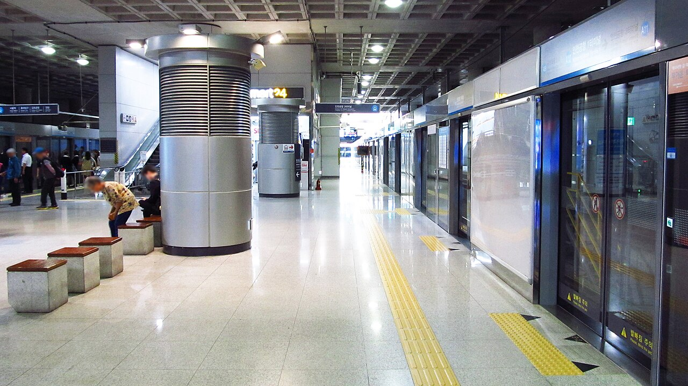

仁川國際機場
仁川廣域市中區公巷路272 · 航廈 24 小時
上一站：桃園機場（TPE）。華航 15:40 起飛，19:15 降落，航程約 2 小時 35 分。抵達後依「입국／Arrival」指標通關，領行李後前往 6007 號巴士站牌。
仁川機場長年名列全球最佳機場評比前段班，第一、第二航廈之間有免費接駁列車（約 15-20 分）——入境前先確認自己是哪個航廈，多數外國籍與廉航在第一航廈。
- 入境卡與海關申報：無申報物品可走綠色通道
- 網路預購的免稅品僅能在「出境」時領取，入境時不經過提貨櫃檯
- 入境審查偶爾大排長龍，抓寬裕時間
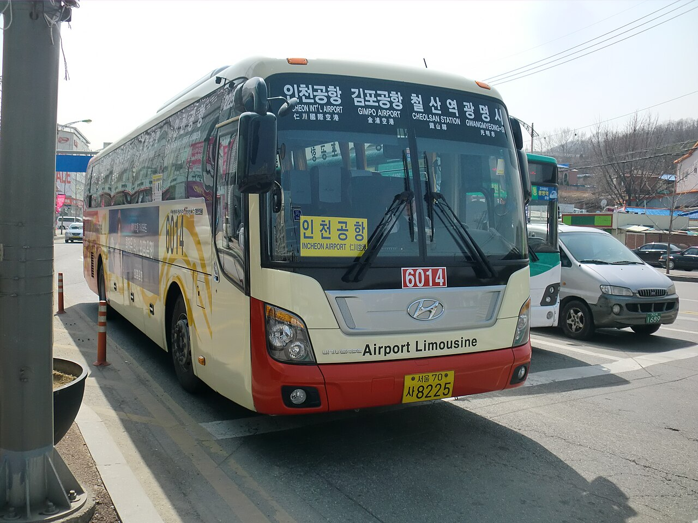
6007 號機場利木津巴士
仁川機場入境層戶外巴士站 · 約 05:30～22:30，每 20-30 分一班
上一站：仁川機場入境大廳。依「리무진버스／Airport Limousine」指標走到戶外巴士站，找 6007 號月台，現場售票機或直接跟司機付現／刷交通卡。車程約 60-70 分鐘直達永登浦一帶。
座位寬敞、有行李廂，不需像地鐵一樣扛行李轉乘，是往返仁川機場最舒服的方式之一。6007 路線專門服務永登浦／九老一帶，晚上抵達時特別推薦。
- 上車前跟站務員或看站牌確認方向與月台——同站牌常有多條路線
- 行李由司機放入車廂下方置物箱，下車前記得取回
- 尖峰時段車程可能因塞車拉長，預留彈性
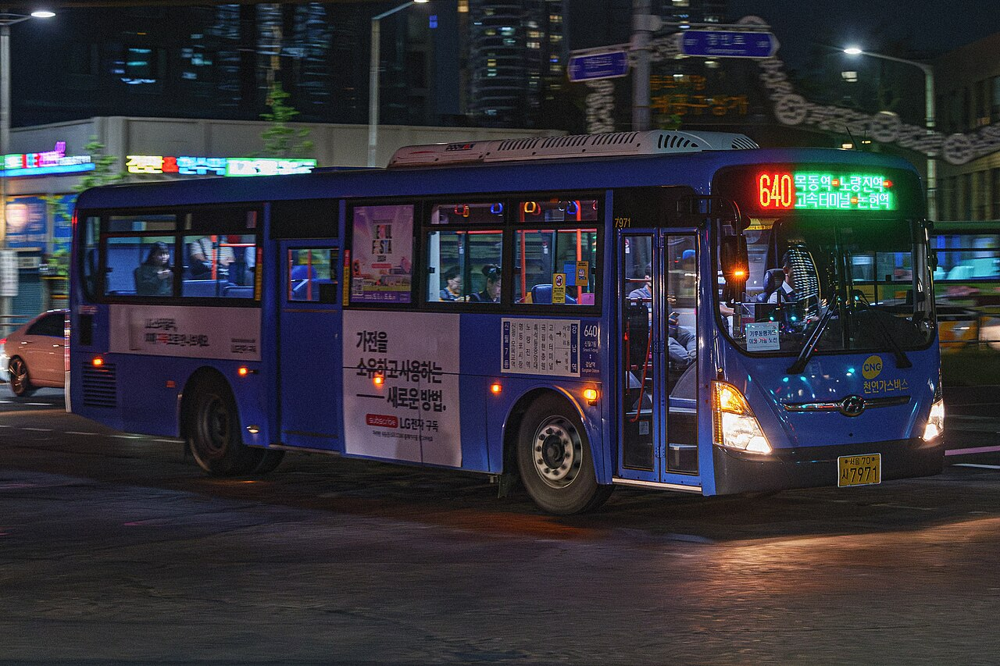

Fairfield by Marriott Seoul, Yeongdeungpo
永登浦區一帶 · 櫃檯 24 小時，標準入住 15:00 後
上一站：6007 號巴士下車站牌。步行約 5-10 分鐘可達，拖行李建議走平面人行道，避開樓梯較多的路口。
永登浦是首爾西南部的交通與商業樞紐，車站周邊集合百貨公司（Times Square）、傳統市場、辦公商圈，是這趟旅程五晚住宿的主基地。
- 今晚儘早休息——隔天是全程優先級最高、行程最緊湊的一天
- 入住時直接跟櫃檯確認：10/31 退房去水原、11/1 晚上才回來，大行李能否「跨夜寄放」，取得明確答覆
Day 2 · 10.29 THU
昌德宮・韓屋・德壽宮
秋景主日——朝鮮宮闕建築邏輯的兩種極端
交通＋門票約 NT$400～700（吃喝另計）

Labab 永登浦1號店
永登浦站附近 · 24 小時營業
上一站：Fairfield 永登浦飯店。步行約 5-10 分鐘，不需搭車。
推薦點：紫菜飯捲或拌飯，配一碗泡菜鍋／拉麵。自助點餐機點餐、櫃檯取餐，飯捲直接手拿即可。道地「韓國上班族早餐」，快、飽、便宜，24 小時營業、獨食零壓力，適合搶時間出發昌德宮的早晨。
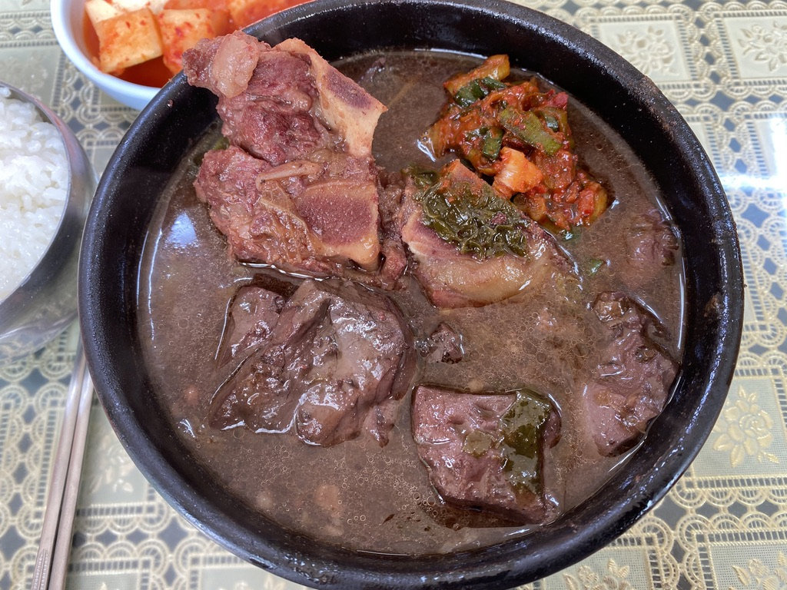
淸進屋
光化門／鐘路一帶 · 06:00 開門
上一站：Fairfield 永登浦飯店。地鐵 1 號線至鐘閣或鐘路3街站，約 25-30 分鐘，步行 5 分鐘。
推薦點：해장국，牛骨／牛血湯底加白菜、黃豆芽熬煮，配白飯，桌上蝦醬、辣椒粉自行調味。老派首爾人「宿醉隔天早上」會吃的湯，濃厚溫暖，一碗一人份，06:00 就開門，適合搶早的行程。
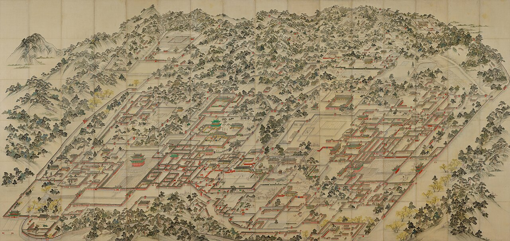
昌德宮
鐘路區臥龍洞栗谷路99 · 約 09:00～18:00，週一公休
上一站：早餐地點。搭地鐵至安國站，車程約 10～30 分鐘不等（依早餐選項），3號出口步行 5-10 分鐘。
1405 年，太宗在景福宮之外另建一座宮殿——不是因為需要更多空間，而是那場逼他登上王位的兄弟鬩牆，讓景福宮的每一根梁柱都成了提醒。昌德宮於是不走中軸對稱的規矩陣式，而是順著山勢起伏鋪展，成為五大宮闕中最不對稱、卻最貼近地形呼吸的一座，1997 年列入 UNESCO 世界遺產。
- 敦化門與仁政殿：朝會空間格局完整保留，屋頂與丹青彩繪值得細看
- 樂善齋：後期王室居住空間，刻意不上漆——樸素本身是一種政治姿態
- 後苑（秘苑）：全韓國保存最好的王室庭園，芙蓉池、映花亭一帶楓紅時期尤其壯觀。必須提前預約導覽場次，逾期無法臨時加入，語言分場（中／英／韓）出發前務必確認
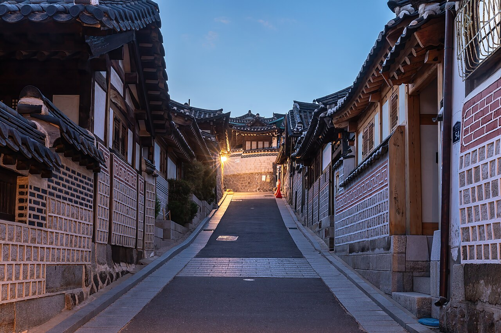
北村韓屋村
鐘路區桂洞街37一帶 · 街區全天開放
上一站：昌德宮正門。步行約 5-10 分鐘，不需搭車。
朝鮮的兩班貴族選在昌德宮、景福宮與宗廟之間的坡地上蓋房子，理由很實際：離兩座宮都近，又不必真的住進宮牆之內。這個「不遠不近」的地緣邏輯，意外保留了首爾少數仍有居民真實生活其中的韓屋街區——不是觀光重建，坡道與窄巷因此特別多。
- 北村八景：官方標示的八個拍照點，第一景、第二景（三清洞方向坡道）最經典
- 屋簷天際線：制高點看瓦片屋頂層疊，背景南山，是北村最具代表性的畫面
- 真實住宅區——壓低音量、不闖入私人庭院拍照，這是社區抗議多年後的默契

안암
安國站／北村入口附近 · 約 11:00～21:00
上一站：北村散步範圍內。步行約 3-5 分鐘，就在入口附近。
推薦點：돼지국밥，豬骨湯底配白飯與蔥花，先喝一口原味湯，再依口味加蝦醬、辣椒粉。清而不油、帶胡椒香，一人一碗份量剛好，比韓屋咖啡店的甜點式午餐更像「真正吃飽的一餐」。
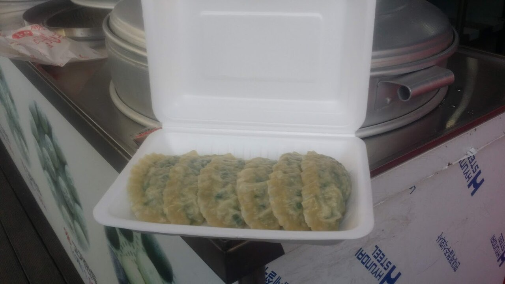
北村손만두
Bukchon-ro 4-gil 10 · 約 10:30～20:30
上一站：北村散步範圍內，與安岩距離很近（1-2 分鐘）。安岩客滿可直接換這間。
推薦點：手工餃子與餃子湯，皮手工桿製、內餡豬肉白菜韭菜，比工廠水餃厚實有嚼勁。湯頭清淡不搶戲，點餐簡單、上菜快，適合續走北村行程時當補給站。
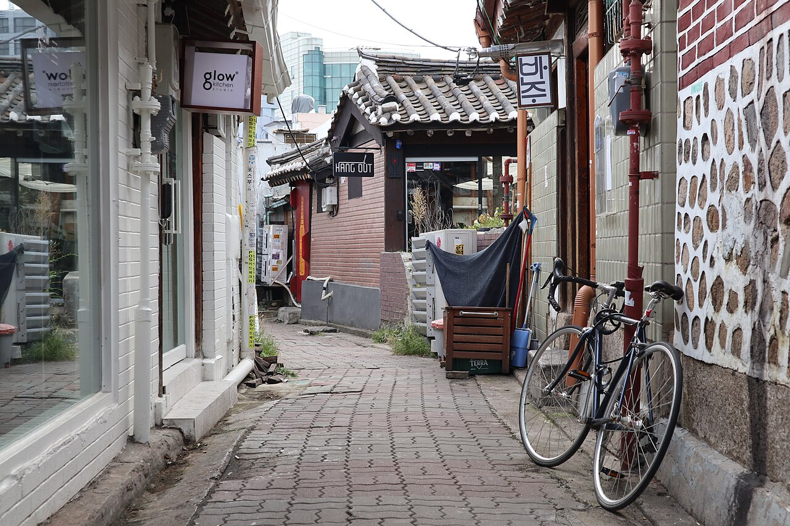
益善洞韓屋村
鐘路區益善洞一帶 · 咖啡店多約 11:00～22:00
上一站：北村午餐地點。步行 15-20 分鐘南下，或地鐵 3 號線安國→鐘路3街（1站）再走 5 分鐘。方向一致，不需回頭。
1920 年代日治都市開發下形成的密集韓屋群，2010 年代後租金便宜吸引年輕創業者把老屋改造成咖啡店與選物店——矮簷窄門對上現代裝潢，是這裡最大的反差感。巷弄極窄、假日人潮多，當成咖啡休息站而非正式一餐，跟午餐分開排動線更順。
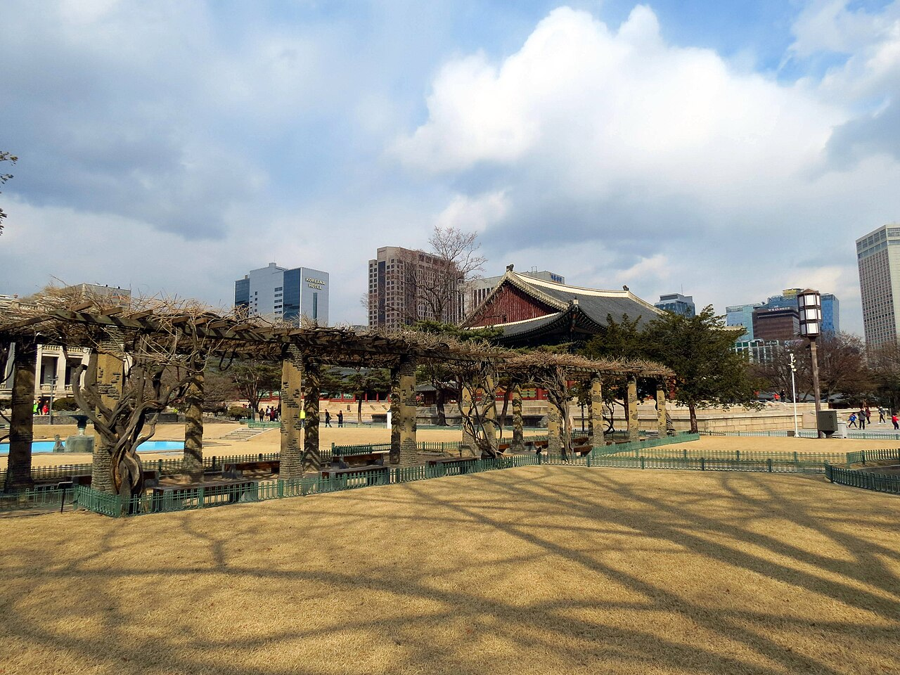
德壽宮
中區世宗大路99 · 09:00～21:00（末場 20:00），週一公休
上一站：益善洞。地鐵 1／2 號線至市廳站，約 10-15 分鐘，步行 3 分鐘到大漢門。
1897 年，高宗站在這座原本只是王室宗親宅邸的院落裡，宣布「大韓帝國」成立——一個試圖用皇帝頭銜擋住列強野心的姿態，最終沒能擋住什麼，卻在建築上留下痕跡：傳統韓式殿閣旁邊，立起一座西式石造建築。五大宮闕裡最「混血」的一座，混血的原因是絕望。
- 石造殿：西式新古典建築，高宗曾在此接見外國使節，現為展覽空間
- 中和殿：傳統正殿，與旁邊石造殿並置，東西對照感最強烈
- 守門將交接儀式：大漢門前 11:00、14:00 舉行（以現場公告為準）——目前排程是傍晚才到德壽宮，會錯過，若想看儀式需把這站提到中午前後
- 貞洞石牆路：宮外沿牆散步道，秋天銀杏楓葉是市區最知名的秋景步道之一

文化屋
乙支路4街站附近 · 約 11:00～21:00
上一站：德壽宮。地鐵 1／2 號線市廳→乙支路4街，約 10 分鐘，出站即達。
推薦點：설렁탕，牛骨牛肉久燉成乳白湯底，無鹹味需自己加鹽蔥調味。1950 年代就存在的乙支路老店，濃郁不厚重，官方列為代表性老乙支路飲食，卻不用排長隊，適合一人悠閒吃一碗。
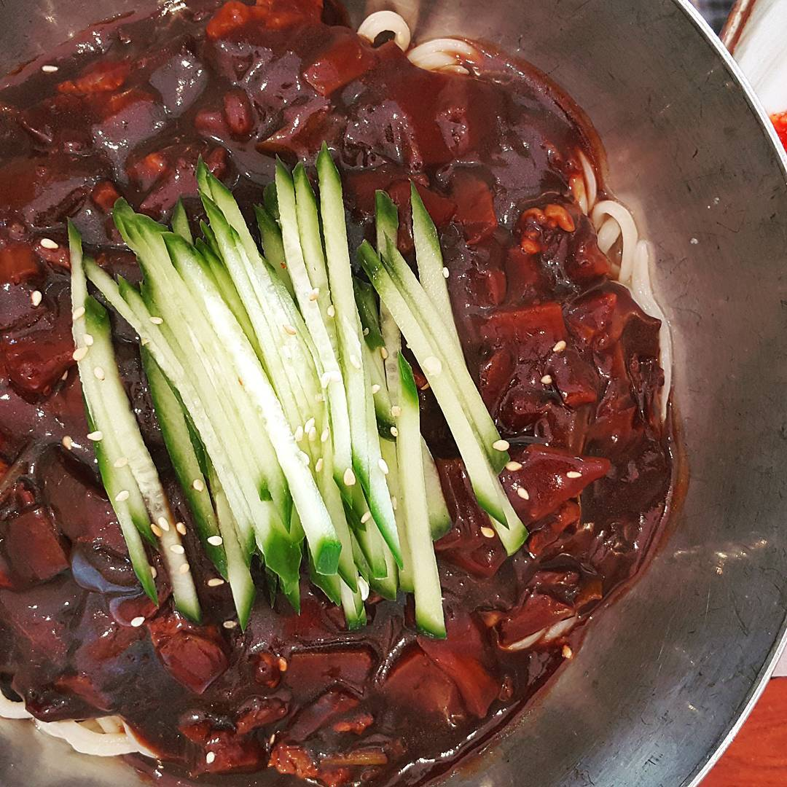
安東莊
乙支路124號 · 約 11:00～21:00
上一站：德壽宮。地鐵 1／2 號線市廳→乙支路4街，約 10 分鐘，步行 3-5 分鐘（與文化屋同區，撞店可互換）。
推薦點：韓式炸醬麵或炒碼麵，上桌先攪拌均勻讓醬料裹麵。跟湯飯路線完全不同的口味切換，甜鹹醬香對上辣鮮湯頭，前面吃了不少湯飯的話，這裡能讓味覺重新開機。
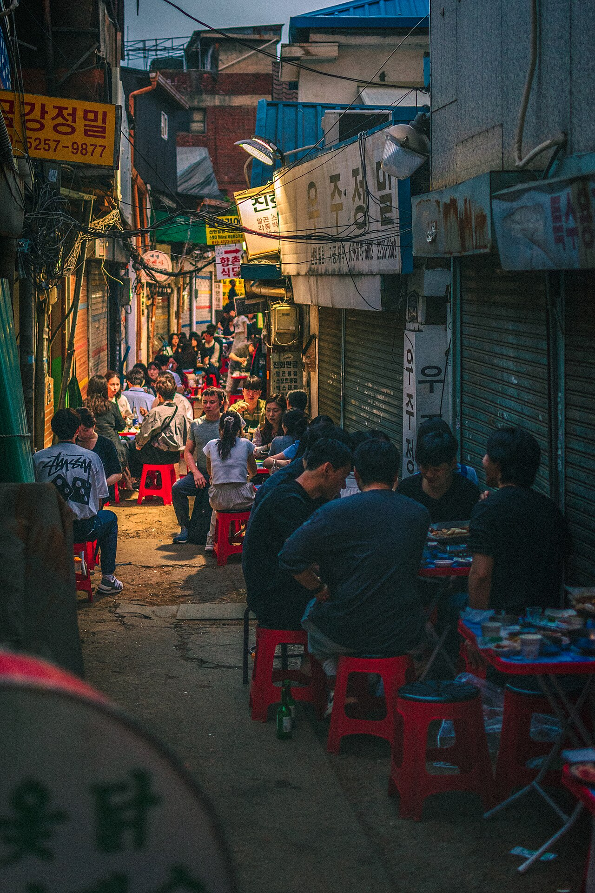
乙支路 Nogari Alley
乙支路3街站周邊巷弄 · 約 17:00～凌晨
上一站：晚餐地點。步行約 5-10 分鐘，同在乙支路商圈內。
노가리——曬乾的小明太魚——配一杯生啤酒，是老首爾上班族最經典的下班儀式。這條巷子保留大量老式路邊攤與復古招牌，近年也吸引年輕人回流。熱門時段（19:00～22:00）非常擁擠，官方也承認這件事，所以不用鎖定特定一家，看到空桌就坐，最符合這趟旅程「不排隊」的原則。
Day 3 · 10.30 FRI
仙遊島・漢江・文來洞
西首爾生活——城市感優先於景點數量
市區交通約 NT$150～250（其餘主要是餐飲）
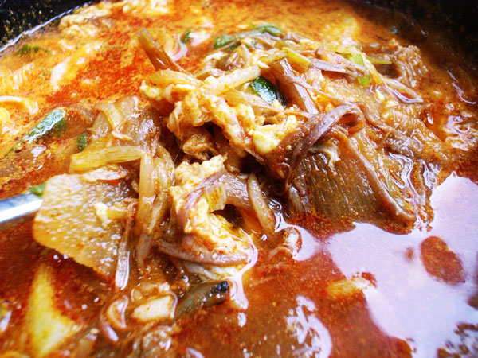
3일한우국밥 영등포
永登浦一帶 · 約 06:00～21:00
上一站：Fairfield 永登浦飯店。步行約 5-10 分鐘。
推薦點：韓牛骨湯配白飯，比一般牛骨湯多一分甘甜油脂香卻不膩。約 ₩11,000，附近居民與上班族的日常早餐，喝完整碗很有力氣走仙遊島。
無圖片 —
Hangugbab
永登浦洞3街 · 24 小時營業
上一站：Fairfield 永登浦飯店。步行約 5-10 分鐘，同區域。
推薦點：簡單韓食定食（飯＋湯＋小菜），一萬韓元以下。不是「必吃名店」，主打方便——24 小時、便宜、家常，適合「起床→吃飽→直奔仙遊島」不用花心思選擇。
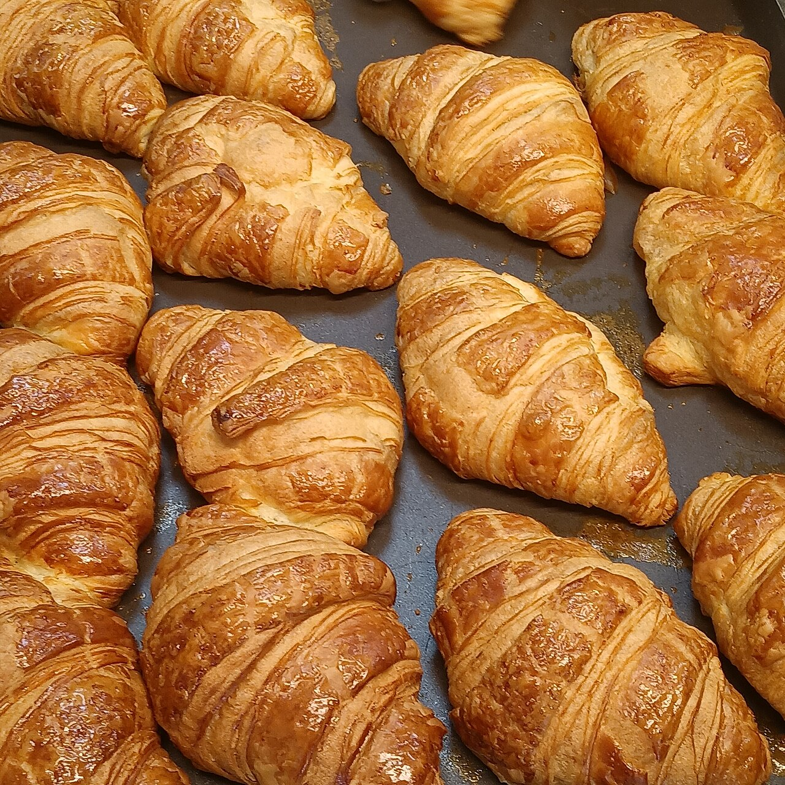
麵包先生 永登浦店
永登浦站步行約 2 分鐘 · 08:00～23:30 全年無休
上一站：Fairfield 永登浦飯店。步行約 5-10 分鐘。
推薦點：手作麵包＋咖啡，歐式風格奶油香明顯。重點不是韓國味而是「換口味」——連續幾天湯飯型早餐後，來點酥脆與咖啡香平衡味覺。
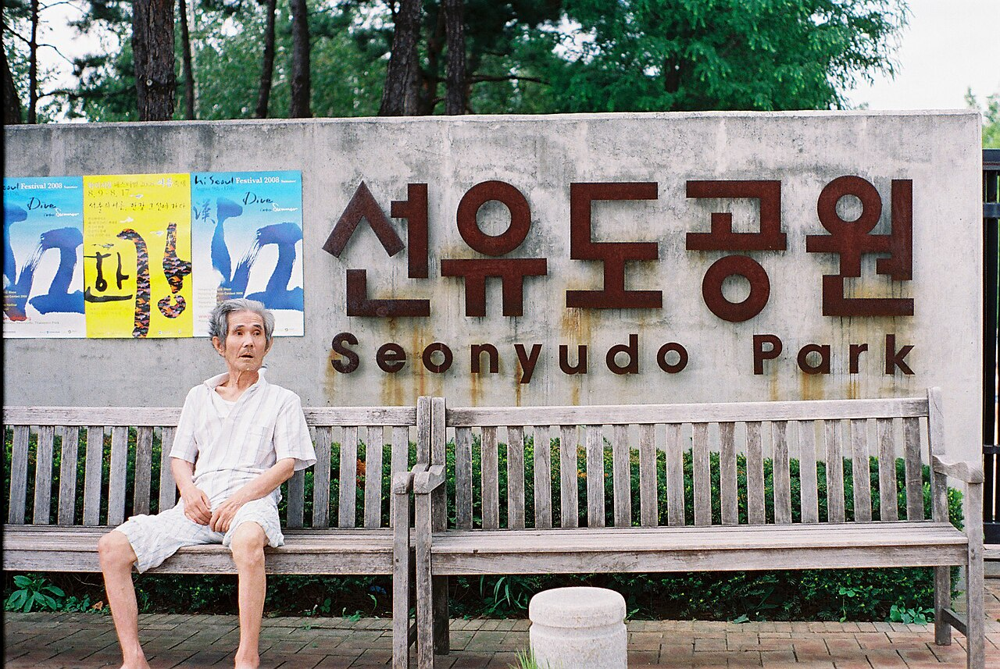
仙遊島公園
永登浦區楊花洞一帶 · 全天開放
上一站：早餐地點。地鐵 1 號線至大方站轉 9 號線，仙遊渡站下車，約 20-25 分鐘，步行過仙遊橋即達。建議用 Naver Map 確認即時路線。
1978 到 2000 年，這裡是漢江的淨水場——把河水過濾成飲用水的工業設施，用完即棄的那種。2002 年，設計師沒有拆掉它重蓋，而是讓藤蔓爬滿裸露的沉澱池水泥柱，把「淨化水」的舊功能，翻譯成「淨化空間」的新語言。韓國第一座生態再生公園，此後成了全球工業遺構再利用的教科書案例。
- 綠柱庭園：舊沉澱池遺構，一整排水泥柱爬滿藤蔓，最具代表性的畫面
- 水質淨化園：舊淨水設施改造成濕地生態池
- 仙遊橋：連接麻浦與汝矣島方向，橋上眺望漢江夕陽極佳
- 秋天楓樹、蘆葦與夕陽最值得停留，建議傍晚前抵達
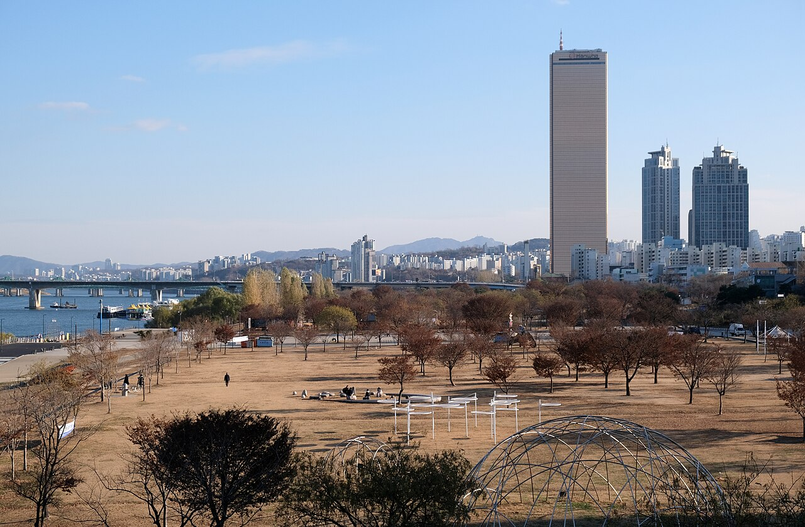
漢江公園
汝矣島／楊花沿岸，仙遊島公園旁 · 全天開放
上一站：仙遊島公園。走過仙遊橋即達，不到 5 分鐘。
沒有固定行程，重點是找地方坐下來看人——跑者、騎士、遛狗的居民，這是首爾人的週五上午，不是為觀光客設計的景點。這段路本來就代表這天「城市感優先於景點數量」的精神，不需要走完整段河濱，感覺對了就往文來洞移動。
無圖片 —
Buyeojib
仙遊洞1路24 · 約 11:00～21:00
上一站：漢江散步段。步行約 5-10 分鐘，仙遊島區域內。
推薦點：老派韓食定食，飯＋湯＋數道小菜，約 ₩10,000～20,000。主打「散完步剛好吃一頓正經的飯」，不用再花心思找餐廳。
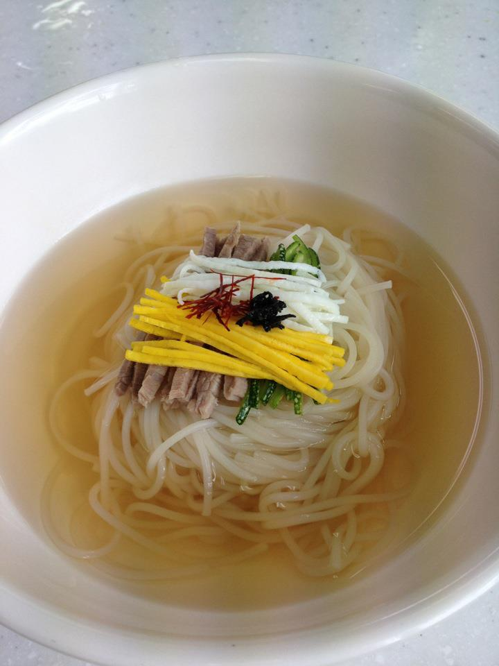
Youngil Bunsik
文來洞道林路141가길 34-1 · 約 11:00～20:00
上一站：漢江散步段。步行或搭一小段公車往文來洞，約 15-20 分鐘。
推薦點：韓式麵食（분식類），老派便宜，沒有裝潢加分，純粹靠味道和熟客撐起口碑。是體驗「文來洞原本怎麼生活」的最佳切入點，比漂亮咖啡廳更貼近真實日常。
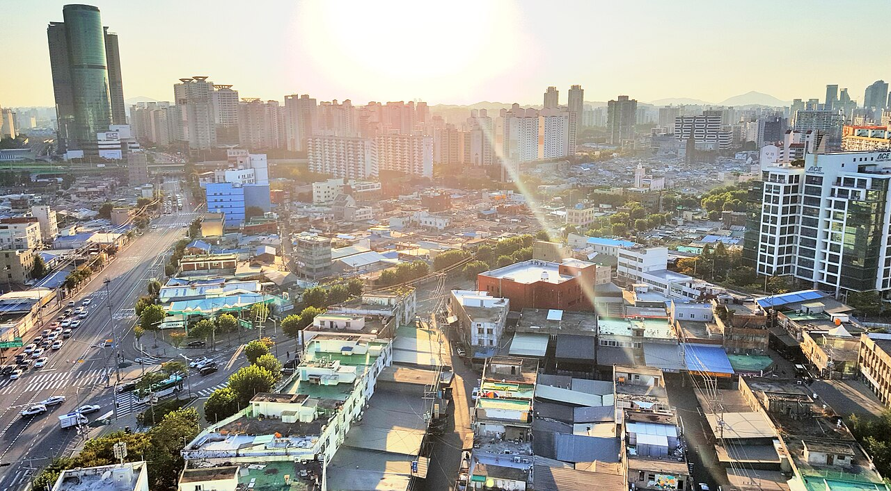
文來洞創作村
永登浦區文來洞一帶 · 街區全天開放
上一站：午餐地點。步行或搭一小段公車，約 15-20 分鐘，方向一致。
1960、70 年代，這裡是首爾最大的鐵工廠聚落，金屬敲打聲從早響到晚。工廠沒有死——數百家小型鐵工廠至今仍在運作——只是 2000 年代中期起，租金便宜的空屋開始被藝術家佔據，壁畫爬上鐵捲門，跟仍在轉動的機具聲共存。首爾少見「產業未死、藝術疊加其上」的活態文化區，不是靠政府規劃出來的，是租金逼出來的。
- 鐵工廠壁畫巷：塗鴉與運作中的機具聲並存，白天反差感最強
- 創作村工作室群：平日開放參觀，晚上變身咖啡廳與酒吧
- 不是為了單一景點打卡，放慢腳步隨意鑽巷子，比按圖索驥更有收穫
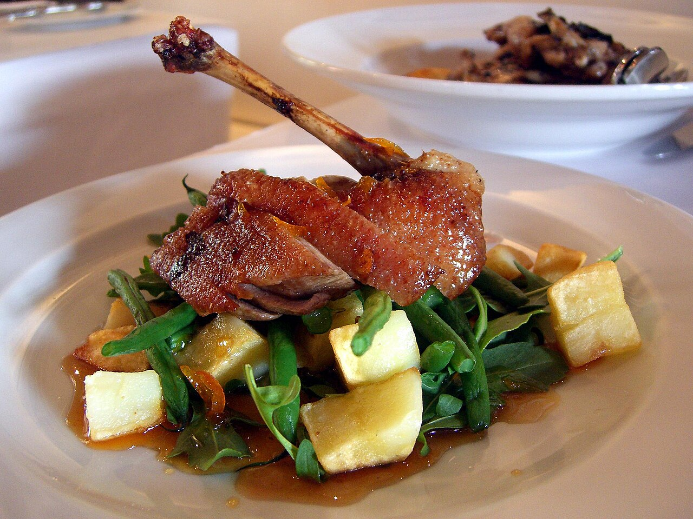
Golmogjib
文來道林路125街34 · 約 16:00～23:00
上一站：文來洞散步範圍內。步行約 5-10 分鐘。
推薦點：烤鴨，鴨肉切片桌邊炭火現烤，用生菜或紫蘇葉包起來吃。跟前幾天的湯飯麵食完全不同類型。務必當天先確認能否點單人份，若店家要求兩人份起訂，不要硬吃，直接換好水蔘雞湯。

Hosu Samgyetang
永登浦道林路274-1 · 約 11:00～21:00
上一站：文來洞散步範圍內。步行或搭一小段公車往永登浦，約 10 分鐘。
推薦點：芝麻蔘雞湯，全雞燉煮加紫蘇籽元素，比一般蔘雞湯多一層堅果香與濃郁感——不是清爽路線而是溫補系。首爾官方列為永登浦代表性蔘雞湯店，一人一隻雞，對獨旅非常友善。
無圖片 —
OLD MULLAE
道林路433-6 · 週五營業至凌晨 01:00
上一站：晚餐地點。步行或搭一小段公車回文來洞方向，約 10-15 分鐘。
保留鐵工廠倉庫的裸露結構、水泥牆與鋼樑，配上啤酒吧氛圍——舊工業空間夜生活化的縮影。不用排成「一定要去」，路過有位置就喝一杯，符合這趟旅程不硬排的原則。週五人潮較多，客滿的話文來洞還有其他工業風酒吧可替代。
Day 4 · 10.31 SAT
水原＋朋友
朋友是主角，景點不要排死；獨行時的目標是水原華城
永登浦→水原交通約 NT$200～300
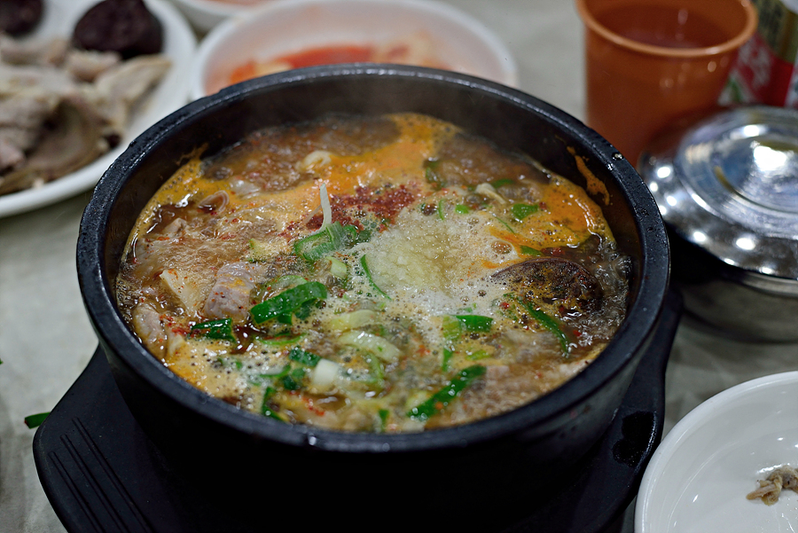
명산순대국
水原站梅山路一帶 · 24 小時營業
上一站：Fairfield 永登浦飯店（退房，大行李留飯店，只背後背包）。地鐵 1 號線直達水原站，約 40-50 分鐘，步行 5 分鐘。
推薦點：순대국，豬骨湯底加血腸、內臟片，配蝦醬提鮮。不敢吃內臟可先跟店家說只要血腸。跟首爾早餐的牛湯完全不同路線，24 小時營業、很適合抵達水原第一餐先感受在地味道。
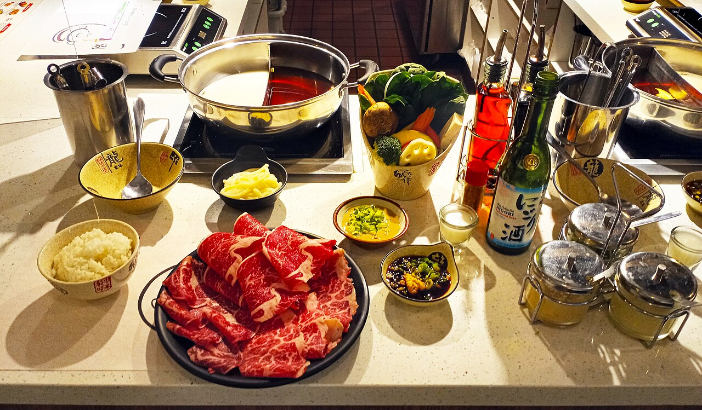
샤브토랑
水原站羅德奧街 · 約 11:00～21:00
上一站：Fairfield 永登浦飯店（退房，大行李留飯店）。地鐵 1 號線直達水原站，約 40-50 分鐘，步行 5-10 分鐘到羅德奧街。
推薦點：個人鍋涮涮鍋，肉片涮 10-15 秒撈起沾醬，最後湯底加麵或粥收尾。跟血腸湯飯完全不同類型，湯底清爽——連續在水原吃湯飯容易膩，這間換個口味，評價很高。
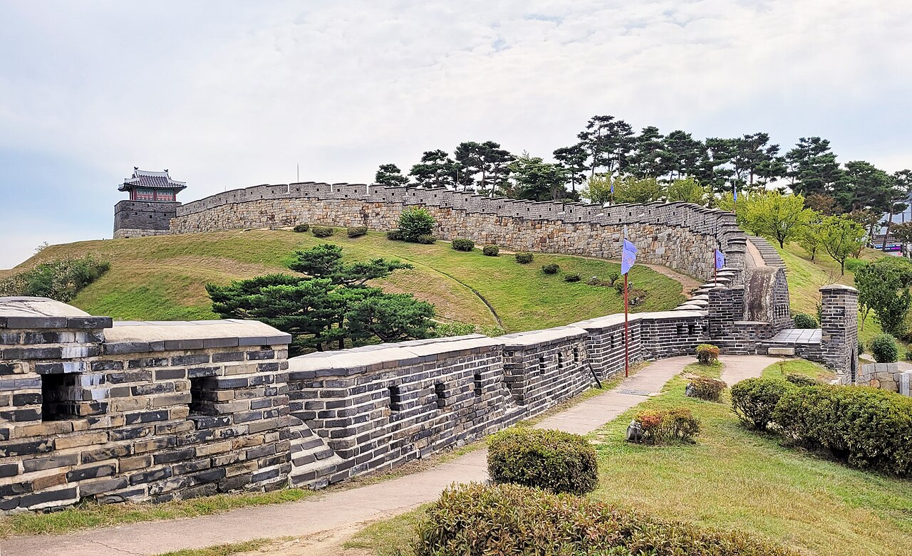
水原華城
京畿道水原市八達區正祖路320 · 城郭全天開放
上一站：水原站早餐地點。公車或計程車往八達門／行宮洞，約 10-15 分鐘（或步行 20-25 分鐘）。若朋友已會合，交通依朋友安排。
正祖的父親思悼世子被自己的父親關進米櫃活活餓死——朝鮮王朝最陰暗的宮廷事件之一。正祖登基後，把父親的墓遷到水原，蓋了這座城，表面理由是孝道，實際上也是把權力基礎搬離景福宮周邊那群反對他的老臣。工程用上了當時最先進的西方磚石工法，學者丁若鏞甚至設計了一台「舉重機」吊運石材——1796 年完工，1997 年列入 UNESCO 世界遺產，是孝心與政治算計同時成立的少數案例。
- 八達門：四大門中保存最完整，城樓與甕城結構值得細看
- 華城行宮：正祖出巡時的臨時行宮，朝鮮行宮之最，可順道參觀
- 城郭步道：全長約 5.7 公里，時間有限選八達門到將台這段精華區
- 腿力有限可搭華城御車（觀光小火車／馬車）代步

Korean noodle of Dae wang
昌龍大路7番街11 · 約 11:00～20:00
上一站：水原華城散步範圍內。步行約 10 分鐘，靠近華城動線。
推薦點：手工刀切麵，麵條桿製比機器製厚實有嚼勁，湯底清爽不油膩。一萬韓元以下、CP 值高，走完城牆後補充體力剛好，不用等太久。
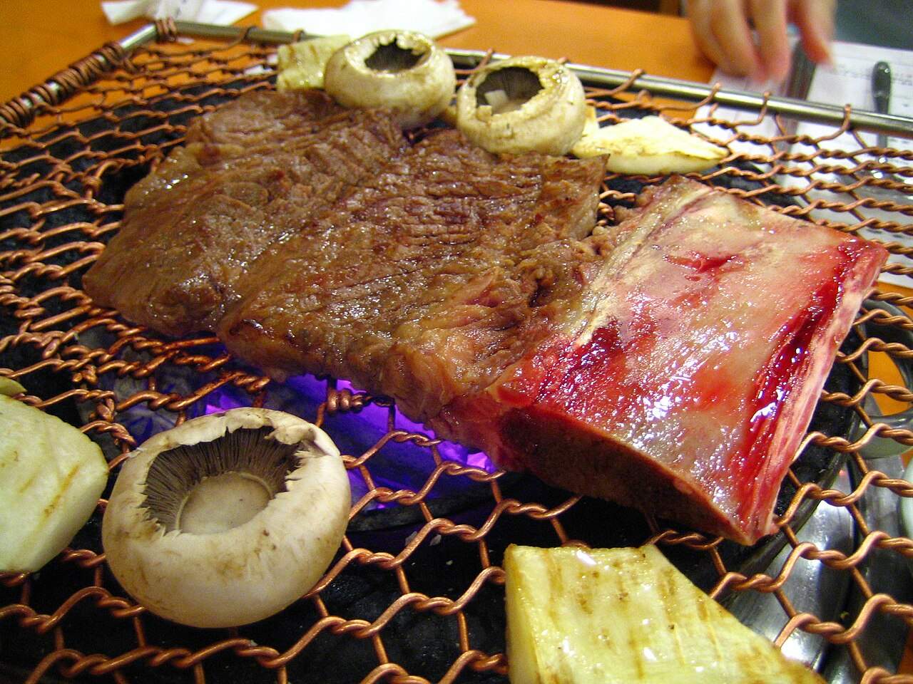
淵瀑排骨
北水洞，華城附近 · 約 11:00～21:00
上一站：水原華城散步範圍內。步行約 10-15 分鐘，北水洞。
推薦點：水原排骨，大塊牛／豬排骨炭烤，事先醃製、外焦內嫩，水原最知名的味道地標。務必跟朋友一起吃——韓式烤肉多以人份計算，獨食限制多，是這趟旅程唯一吃到水原排骨的機會。
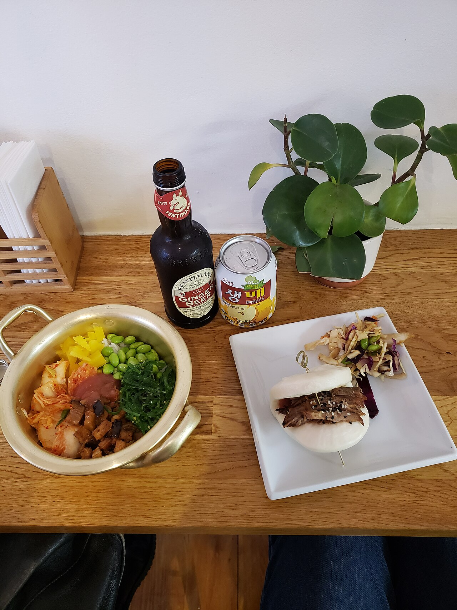
달달한부엌
水原市八達區華西門路48番街38 · 週四～週一 11:00～17:30（週二三休）
上一站：水原華城散步範圍內。行宮洞，離華城很近，步行約 10 分鐘，順路不繞遠。
推薦點：拌飯，只有 4 種口味，配海帶湯、豆腐煮物、蘿蔔泡菜，清爽不辣。真正的獨旅版首選——不像水原排骨需要朋友，這間一個人吃完全自在，朋友沒空或臨時湊不到人數，直接來這間最踏實。
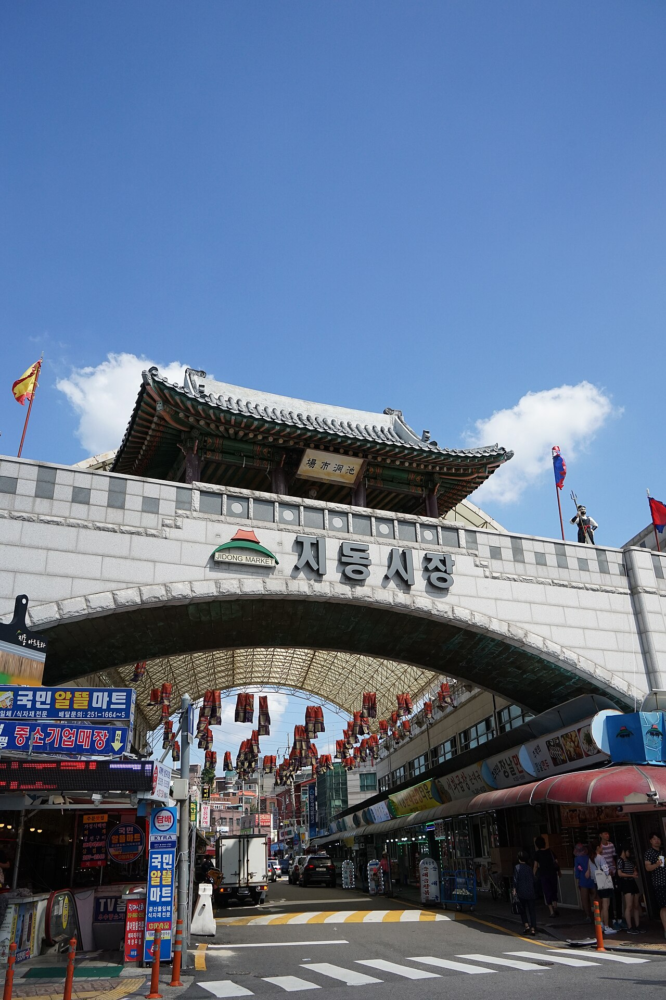
池洞市場
八達門附近 · 約 10:00～21:00
上一站：午餐地點（皆在華城周邊）。步行或短程公車約 10-15 分鐘。若朋友帶路，交通依朋友安排。
推薦點：不鎖定單一攤位，炸雞、血腸、煎餅、餃子邊走邊選，站著吃或找市場座位。重點不是精緻，而是市場庶民小吃的多樣性與現場氣氛——這餐刻意保留成「邊走邊決定」，朋友帶路則優先讓朋友選，這裡只是保底選項。
Day 5 · 11.01 SUN
安養川・鷺梁津
收尾前奏——唯一不可替代的內容是鷺梁津水產市場
交通約 NT$200～300 · 海鮮午餐約 NT$800～1,500
無圖片 —
Cafe Queue de Cog
行宮洞新豐路54 · 約 09:00～20:00
上一站：水原朋友家過夜地點。行宮洞範圍內步行可達，較遠則搭計程車或公車約 10-15 分鐘。
推薦點：早午餐套餐＋手沖咖啡。不是最「傳統韓國」，用意是料理多樣性——前一天已經非常韓式，這天換成咖啡＋蛋料理，也讓早上步調慢下來，好好休息再出發去安養川。
無圖片 —
메이븐 행궁본점
水原昌龍門附近 · 約 10:00～21:00
上一站：水原朋友家過夜地點。與選項1同區域，撞店時直接走過去換這間，步行約 10 分鐘內。
推薦點：大份量早午餐盤＋咖啡，空間寬敞適合坐久一點。跟選項1同樣走咖啡輕食路線，差別在空間更寬敞。很早出發也可以直接便利商店咖啡打發，把胃留給鷺梁津。
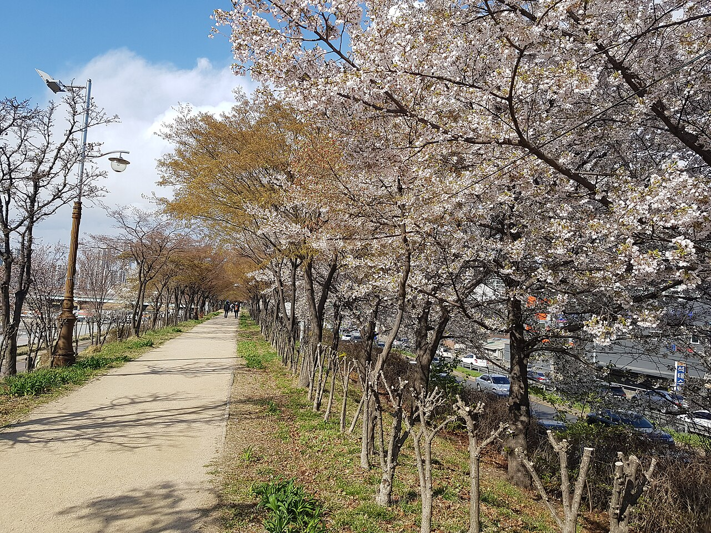
安養川
安養／冠岳一帶河濱步道 · 全天開放
上一站：早餐地點（行宮洞）。地鐵 1 號線往首爾方向，安養／明鶴／冠岳一帶車站下車步行至河濱，全程約 30-40 分鐘。
漢江支流之一，流經安養、光明、九老一帶，近年整治成河濱步道，是首都圈通勤族與住宅區居民日常散步慢跑的空間。沒有特定「景點」，重點是秋色與住宅區日常感——這段路明確標示為可彈性刪減，腿累或水原玩得晚，直接刪掉、保留鷺梁津的時間與體力。
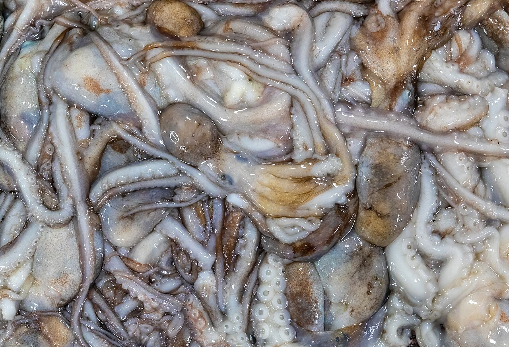
鷺梁津水產市場
鷺得路674 · 24 小時營業
上一站：安養川（或直接從水原早餐處）。地鐵 1 號線直達鷺梁津站，約 20-30 分鐘，步行約 5 分鐘。
1927 年開業，快一百年來這裡是首爾水產批發的心臟——凌晨的拍賣是行家的戰場，白天的零售則是遊客的舞台。一樓挑魚、樓上加工的動線，本質上是一套議價系統：你付的是食材費，另外再付一筆「代客料理」的手續費，兩筆錢分開算，先繞一圈比價再出手。一個人不建議買帝王蟹或超大套餐，小份組合更符合獨旅步調——這裡賣的不只是海鮮，是「即殺即吃」這件事本身的新鮮感。
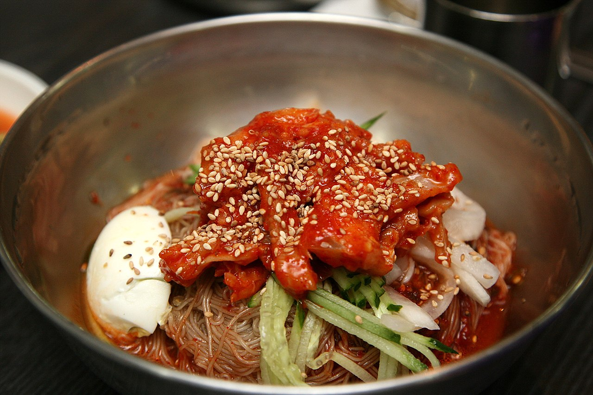
진주식당
水產市場 5F · 約 09:00～21:00
上一站：鷺梁津水產市場 1 樓。電梯或手扶梯直上 5 樓，不需離開建築物。
推薦點：現成生魚片定食或海鮮湯套餐，菜單直接點、不用自己跟魚販議價。省去選魚議價流程，新鮮度依然有保障但少了「市場體驗感」，一個人吃比自己談價格省腦很多。
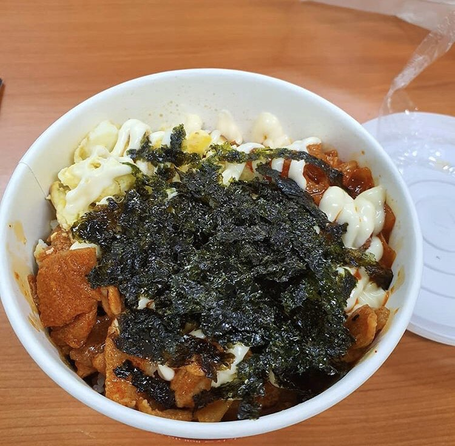
鷺梁津杯飯街
鷺梁津洞148-88 · 約 10:00～20:00
上一站：鷺梁津水產市場。步行約 5-10 分鐘，同在鷺梁津站周邊。
推薦點：컵밥，一碗飯堆肉、蛋、泡菜等配料，用湯匙在杯裡拌勻，站著吃很自然。學生考試補習區留下的代表性便宜料理，覺得海鮮太麻煩，這裡完全不用排高級名店。
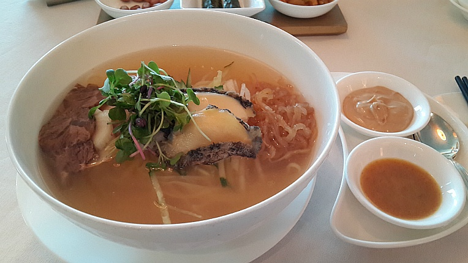
咸興冷麺
永登浦路42街6 · 約 11:00～21:00
上一站：鷺梁津午餐地點。地鐵 1 號線至永登浦站，約 10 分鐘，步行 5 分鐘。
推薦點：紅薯澱粉Q彈麵條拌辣醬，上桌先用剪刀剪短再拌勻。源自朝鮮半島北部咸興地區的難民飲食文化，辣中帶甜很開胃——吃了一下午海鮮後，這道清爽冷麵讓食物種類再多一格，也不會太厚重。
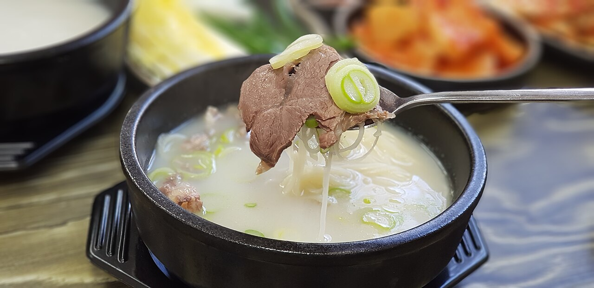
대한옥설렁탕
永登浦路51街6 · 約 07:00～21:00
上一站：鷺梁津午餐地點。地鐵 1 號線至永登浦站，約 10 分鐘，與咸興冷麵同區域，撞店可互換。
推薦點：雪濃湯，牛骨久燉成乳白湯底，自己加鹽蔥調味。十一月晚上轉冷的話，這道濃郁溫暖的湯比冷麵討喜很多，是保守但穩妥的收尾選擇。
Day 6 · 11.02 MON
醫美＋最後採購
不是觀光日，是任務執行日
交通約 NT$500～900（醫美費用另計，術後計程車回飯店較舒服）
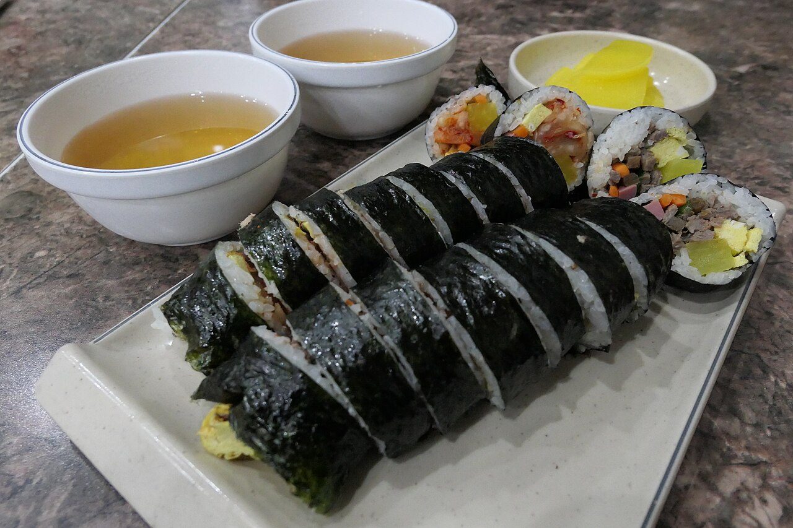
Ssada Gimbap - Sinsa Station
新沙站附近都山大路124 · 24 小時營業
上一站：Fairfield 永登浦飯店。地鐵 9 號線直達新沙站，約 30-40 分鐘，步行 5 分鐘。
推薦點：紫菜飯捲、拉麵、炒飯或炸豬排，任一項都快速方便。醫美日前「不會出錯」的選擇——24 小時、一萬韓元以下，吃完能準時抵達診所，不用擔心排隊耽誤時間。
無圖片 —
Oasis Cafe & Restaurant Cheongdam
清潭都山大路55街20 · 約 08:00～21:00
上一站：Fairfield 永登浦飯店。地鐵 9 號線轉 7 號線至清潭一帶，約 40-50 分鐘，步行 5-10 分鐘。
推薦點：早午餐類（蛋料理、沙拉、麵包）。比選項1貴一些但空間精緻，適合想在醫美前吃得漂亮一點、放鬆心情再出發——若預約真的在下午，早上可以坐久一點。
無公開圖片 —
V&MJ 醫美診所
江南／狎鷗亭一帶 · 尚未預約，保留彈性
上一站：早餐地點（新沙或清潭）。步行或計程車約 10-15 分鐘，同屬醫美商圈範圍。
這是整趟旅程真正的主軸——前後行程都應該圍繞這個時段調整，不是反過來。目標醫師 Kim Min-joo 是診所代表院長，同時擔任 Ultherapy Global Advisory 與教育醫師等核心角色。
- 預算：400 shots PRIME 約 NT$6～7 萬，指定本人可能加價
- 敷麻藥＋施術＋術後照護整體約 2～3.5 小時，前後不排緊湊行程
- 術後不安排長時間戶外活動，防曬／飲酒／運動以診所當天指示為主
- 建議術後直接計程車回飯店，不勉強走路或擠地鐵
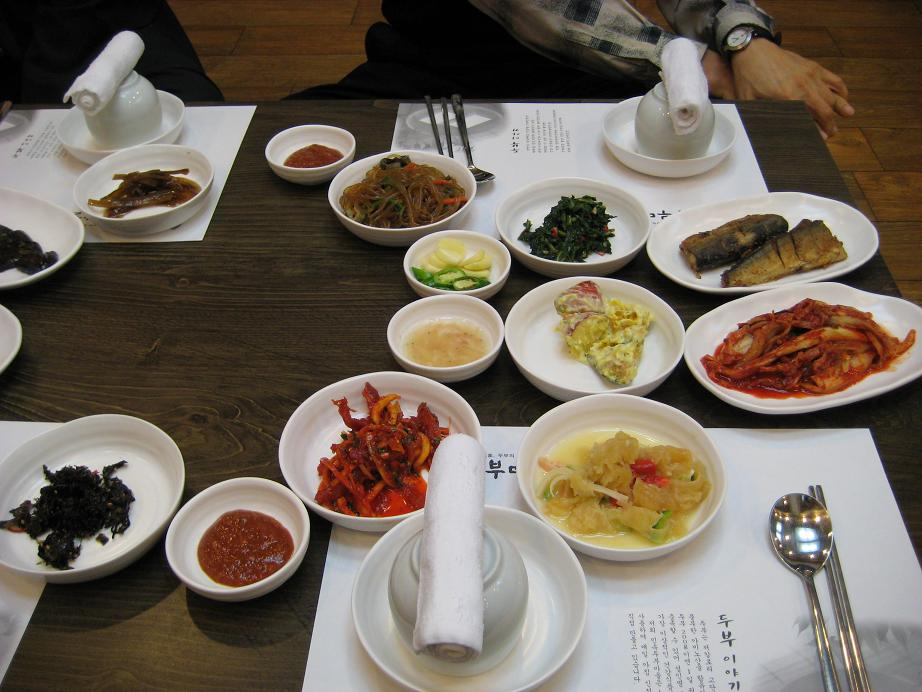
吉江韓食堂 狎鷗亭本店
狎鷗亭路30街17 · 約 11:00～21:00
上一站：V&MJ 醫美診所。步行約 10 分鐘，同商圈範圍，術後不用移動太遠。
推薦點：韓式家常定食（飯＋湯＋多道小菜），約 ₩10,000～30,000。術後臉部若微腫敏感，選不辣溫和的菜色較保險——地點跟醫美區很搭，不用花額外力氣找餐廳。
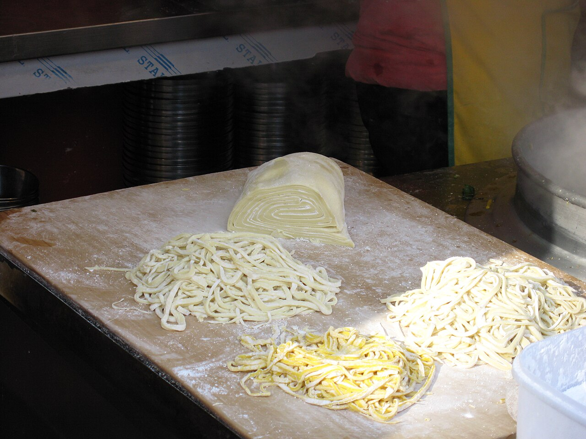
論峴手工刀切麵
論峴路111街16 · 約 11:00～20:00
上一站：V&MJ 醫美診所。步行約 10-15 分鐘，與吉江韓食堂同區域，撞店可互換。
推薦點：手工刀切麵，湯頭清爽。₩10,000 以下、一個人吃很簡單，重點是快速解決——不用在醫美日花一小時吃午餐，清淡湯頭對術後身體也比較不負擔。
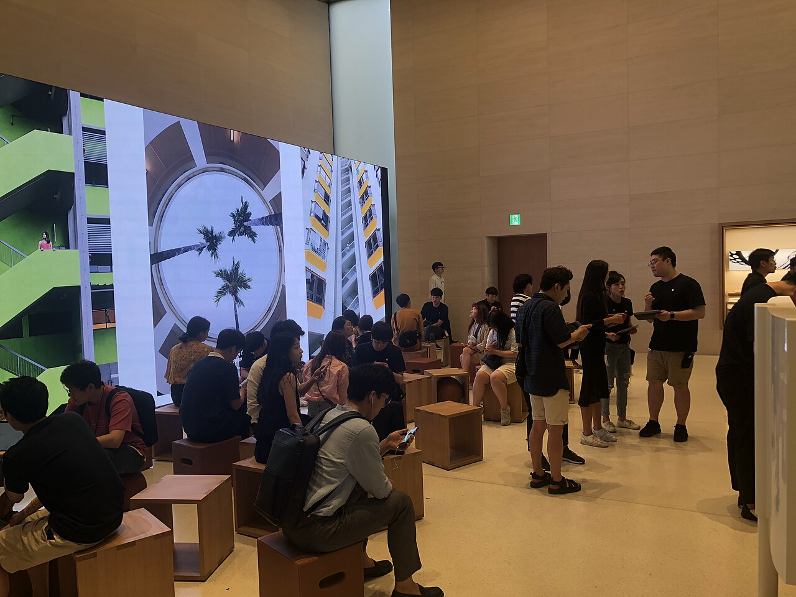
狎鷗亭／新沙購物區
狎鷗亭羅德奧、新沙洞林蔭道一帶 · 約 10:30～22:00
上一站：午餐地點。步行約 10-15 分鐘，同商圈範圍。
首爾美妝時尚產業的核心地帶，Olive Young 旗艦店與設計師服飾店集中於此。這天是收尾＋恢復日，購物節奏放慢，不要跟術後身體對抗。
- Olive Young 旗艦店退稅櫃檯多有中文服務，記得帶護照
- 術後臉部若紅腫，避開人多的假日午後，選人潮少的時段
- 林蔭道兩側巷弄（세로수길）藏了不少小眾選物店，比主街更值得逛
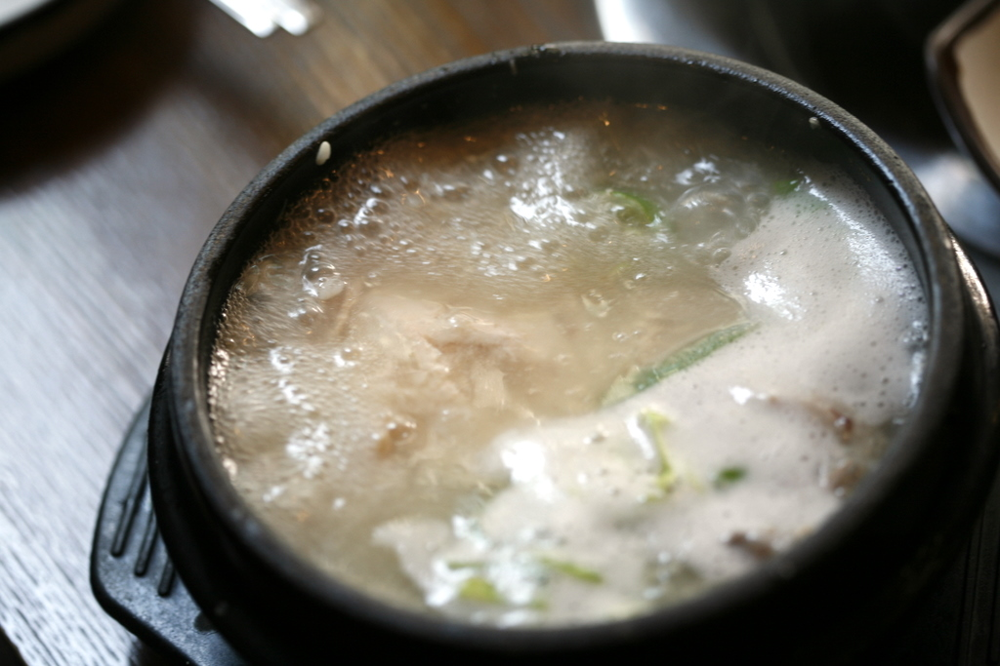

Hosu Samgyetang
永登浦道林路274-1 · 約 11:00～21:00
上一站：狎鷗亭／新沙購物區。地鐵回永登浦方向，約 30-40 分鐘。術後建議直接計程車回飯店周邊再走過來。
推薦點：芝麻蔘雞湯（與 10/30 晚餐同店）。溫補系湯品對術後身體特別友善——熟悉的味道、不用再花心思決定去哪，讓身體好好休息準備隔天回程。
無圖片 —
文來／永登浦餐酒吧一帶
文來洞／永登浦一帶 · 多數約 17:00～深夜
上一站：狎鷗亭／新沙購物區。地鐵約 30-40 分鐘。術後建議先計程車回飯店休息，視狀況再決定要不要出門。
推薦點：不鎖定單一店家，回文來／永登浦吃熟悉的料理，找一間有位置的 bar 坐坐。不追求新鮮感而是熟悉感——前幾天已走過這一帶。但如果診所交代術後不要喝酒，這杯就取消，醫美花的錢比一杯酒貴多了。
Day 7 · 11.03 TUE
回台灣
固定錨點——不把最後一天玩成機場競速
機場巴士約 NT$400

Fairfield by Marriott Seoul, Yeongdeungpo
永登浦區一帶 · 退房約 11:00 前，此行建議 08:00～08:30 離開
上一站：飯店房間。前一晚整理好行李，退房只需歸還房卡、確認帳單，不需交通移動。
整趟旅程最後一個「首爾據點」，退房前做最後檢查，避免遺留物品或錯過交通時間。
- 檢查插座、浴室、床頭櫃是否有充電器等小物遺留
- 若有 10/31 跨夜寄放的行李，一併確認取回
- 08:00～08:30 離開是為了配合 6007 巴士與登機前安全緩衝，不要拖延

6007 號機場利木津巴士
永登浦區內站牌 · 約 05:30～22:30，每 20-30 分一班
上一站：Fairfield 永登浦飯店。步行約 5-10 分鐘至站牌，車程約 60-70 分鐘直達仁川機場。
與抵達當天搭的是同一條路線，方向相反，行李放車廂下方，不需要在地鐵轉乘中拖行李。
- 國際線建議起飛前 2.5～3 小時到機場，回推上車時間
- 平日尖峰時段可能塞車，抓寬裕緩衝
- 若術後仍有輕微腫脹不適，巴士座位比地鐵站立更舒適

仁川國際機場
仁川廣域市中區公巷路272 · 航班 ICN 12:30 → TPE 14:20
上一站：6007 號機場巴士。下車後依「출국／Departure」指標走進航廈，找華航（China Airlines）櫃檯辦理報到、託運行李。
整趟旅程的終點站，登機前留一點時間逛免稅店或吃點東西，放鬆結束九天的行程。
- 出境安檢與海關可能排隊，尤其假日或連假前後
- 醫美相關保養品或購物戰利品，注意液體凝膠隨身行李限制（通常單瓶 100ml 以下）
- 免稅店網購若有預訂，記得在出境後、登機前的取貨櫃檯領取